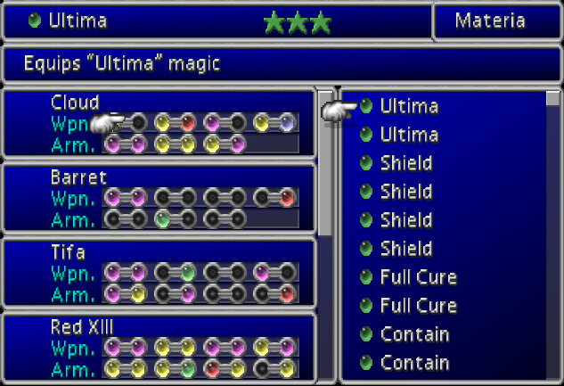

Raw WebGL
Nick Desaulniers
Nick Desaulniers
Open Source Zealot at Mozilla

Organized NSA protest in San Francisco
Spoke About the Evils of Software Patents on NPR
There's more to JS than jQuery
There's more to 3D than Three.js
Warning
Graphics programming is a rabbit hole that is infinitely deep

History


Pipeline

What goes into a WebGL
Application?

All of these are optional except a single shader pair
Assets
All assets need to be loaded. There should be a proper seperation of concerns.
Shaders are just strings.
Buffers are just bytes (can be stored in JSON).
Textures are just images/videos.
Terminology
Vertex

A special kind of point that describes the corners or intersections of geometric shapes.
Polygon

A figure bounded by edges, and the points where two edges meet are the polygon's vertices.
Mesh

A polygon mesh is a collection of vertices, edges and faces that defines the shape of a polyhedral object in 3D computer graphics and solid modeling. AKA Model.
Buffer

A data buffer is a region of a memory used to temporarily store data while it is being moved from one place to another.
Bitmap

A data structure representing a rectangular grid of pixels, or points of color, viewable via a display medium.
Textures

A bitmap that will later be applied or mapped onto a mesh or model.
Frustrum

The portion of a solid (normally a cone or pyramid) that lies between two parallel planes cutting it.
Shaders
Small programs that run massively parallel on the GPU.
Shaders come in pairs (for now).
There is always a vertex and a fragment shader.
A vertex shader can feed a fragment shader.
Shaders can be mixed and matched if the have the same output to input.
What I think of shaders
Mix and Match


The Canvas
Getting a WebGL Context
var canvas = document.getElementById('my_canvas');
var gl = canvas.getContext('webgl') ||
canvas.getContext('experimental-webgl');
if (!gl) throw new Error("browser may not support webgl");